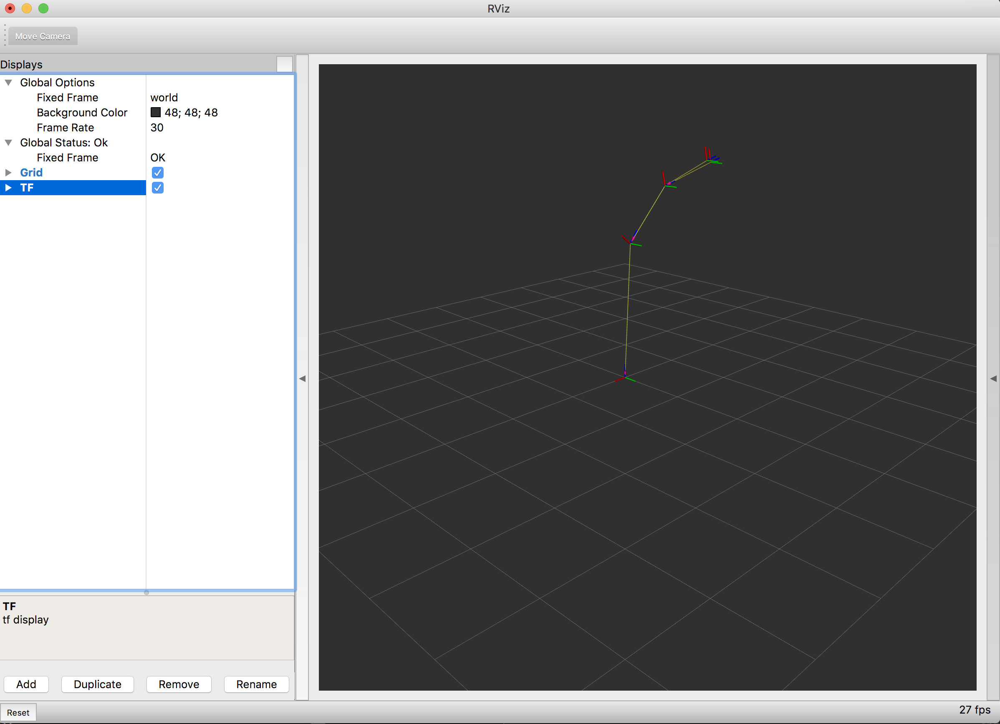

在此演示中，我们使用一个简单的演示机器人，其中包括从发布关节状态到发布虚假激光数据，再到在RViz中可视化机器人模型的所有组件。 [5266]
我们假设您的ROS 2安装目录为``~/ros2_ws``。请根据您的平台更改目录。 [5268]
要启动演示，我们执行演示启动文件，我们将在下一部分中对其进行详细解释。 [5269]
source ~/ros2_ws/install/setup.bash
ros2 launch dummy_robot_bringup dummy_robot_bringup.launch.py
你应该在终端中看到一些打印输出，类似以下内容: [5270]
[INFO] [launch]: process[dummy_map_server-1]: started with pid [25812]
[INFO] [launch]: process[robot_state_publisher-2]: started with pid [25813]
[INFO] [launch]: process[dummy_joint_states-3]: started with pid [25814]
[INFO] [launch]: process[dummy_laser-4]: started with pid [25815]
Initialize urdf model from file: /home/mikael/work/ros2/bouncy_ws/install_debug_isolated/dummy_robot_bringup/share/dummy_robot_bringup/launch/single_rrbot.urdf
Parsing robot urdf xml string.
Link single_rrbot_link1 had 1 children
Link single_rrbot_link2 had 1 children
Link single_rrbot_link3 had 2 children
Link single_rrbot_camera_link had 0 children
Link single_rrbot_hokuyo_link had 0 children
got segment single_rrbot_camera_link
got segment single_rrbot_hokuyo_link
got segment single_rrbot_link1
got segment single_rrbot_link2
got segment single_rrbot_link3
got segment world
Adding fixed segment from world to single_rrbot_link1
Adding moving segment from single_rrbot_link1 to single_rrbot_link2
[INFO] [dummy_laser]: angle inc: 0.004363
[INFO] [dummy_laser]: scan size: 1081
[INFO] [dummy_laser]: scan time increment: 0.000028
Adding moving segment from single_rrbot_link2 to single_rrbot_link3
Adding fixed segment from single_rrbot_link3 to single_rrbot_camera_link
Adding fixed segment from single_rrbot_link3 to single_rrbot_hokuyo_link
如果你现在在另一个终端中打开RViz，你会看到你的机器人。🎉 [5271]
$ source <ROS2_INSTALL_FOLDER>/setup.bash
$ rviz2
这将打开RViz2。假设你已经启动了dummy_robot_bringup，现在你可以添加TF显示插件并将全局坐标系配置为``world``。完成后，你应该看到类似的画面: [5272]
如果你仔细查看启动文件，你会发现我们同时启动了一些节点。 [5274]
dummy_map_server [5275]
dummy_laser（虚拟激光） [5276]
dummy_joint_states（虚拟关节状态） [5277]
robot_state_publisher [5278]
前两个软件包比较简单。``dummy_map_server``（虚拟地图服务器）会定期发布一个空地图。``dummy_laser``（虚拟激光）基本上也是一样的，会发布虚拟的激光扫描数据。 [5279]
``dummy_joint_states``（虚拟关节状态）节点会发布虚拟的关节状态数据。由于我们只有一个简单的RRbot机器人，这个节点会发布这两个关节的关节状态值。 [5280]
``robot_state_publisher``（机器人状态发布器）才是真正有趣的部分。它会解析给定的URDF文件，提取机器人模型并监听传入的关节状态。根据这些信息，它会发布我们机器人的TF（变换）值，我们可以在RViz中进行可视化。 [5281]
好耶！ [5282]